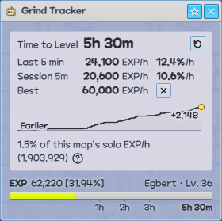
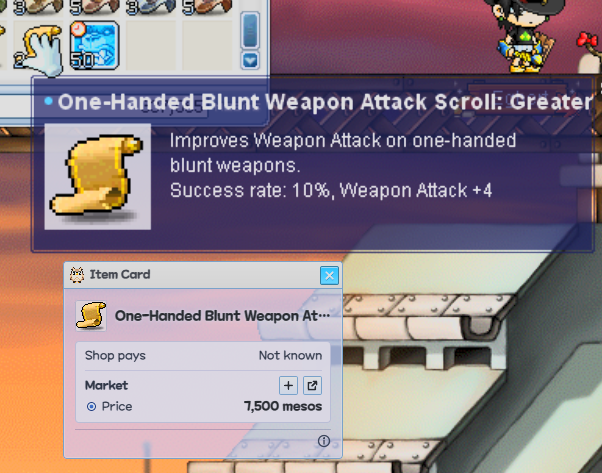
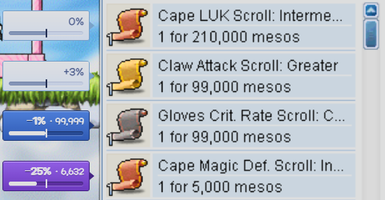

Your guide for MapleStory Classic World
A free overlay that sits beside the game. It shows every portal on the map, even hidden ones, and finds you a good place to hunt and the way there. It tracks your EXP per hour, and helps you price items and spot deals in Player Shops.
It only looks at the screen, the way a screenshot does: it never reads the game's memory or presses keys for you.
- Free
- Open source
- No sign-up
- Windows 10 & 11
On a phone? Minerva runs on a Windows PC, beside the game. Open this page on your PC to download it.
Minerva @VERSION@ · Other downloads · What's new
The files aren't code-signed, so Windows may say it "protected your PC": choose More info, then Run anyway. Play the game windowed or borderless, not fullscreen.
Minerva isn't made, endorsed or supported by NEXON. Using any third-party tool with MapleStory is at your own risk. How it stays safe


Every portal, even the hidden ones
The Map Preview shows the whole map with its portals circled, including the Hidden Portals the game doesn't show you. It also tells you where each portal goes.

What a map is worth
The Map Summary estimates how much EXP an hour a map can give, solo or in a party, and lists its mobs by level. Point at a mob to see its spawn points.

The way to any mob, map or NPC
Search for a mob and Minerva lists the maps it spawns on, best first. Pick one as your Hunting Target, or pick any map or NPC, and the panel shows the way there, portal by portal.

Your pace, and your best on every map
The Grind Tracker reads your EXP bar and shows your EXP per hour and time to level. It also reads the game's pickup log to count your loot, the mesos and items you pick up. It keeps each character's Personal Best on every map, alone and with a party, and shows when you're close to beating it. In a party, hover your rate to see how much of your EXP came from the party.
What others get on every map
The Map Leaderboards rank Minerva players' Personal Bests on each map by Level Band, with solo and party bests together or apart. Where to train lists the maps for your Level Band, with what people at your level really get on each. Two pedestals show who holds the most top-3 places and who has the highest EXP per hour. On a map's board, each name has its ClassicRank portrait beside it. New characters are shared by default. To keep one off the boards, turn off Share under its name in your Personal Bests.

What an item is worth
Hover an item and press Ctrl+Shift+I. Its Item Card shows what an NPC shop pays for it, what it goes for between players on maplestory.market, and any prices you've noted down.

Any item's page in one key
Hover an item and press Ctrl+Shift+U. Item Lookup opens the item's MeowDB page, which lists what drops it and which quests use it.

The deals in any Player Shop
Open a Player Shop and press Ctrl+Shift+D. The Deal Finder puts a badge on every listing priced under its going rate, and the badge says how far under it is.
How it stays safe
Minerva is a third-party tool, not made or approved by Nexon, so no one can guarantee it's safe for your account. Using Minerva is at your own risk.
A ban is very unlikely, though. Like other tools that read what the game shows, Minerva only looks at the screen:
- It captures the minimap title and the bar at the bottom of the game (and, if you choose, an item's tooltip or a Player Shop) the same way a screenshot does, and draws its own window.
- It never reads or changes the game's memory or files, and never injects anything into it.
- It never presses keys or clicks for you, and automates nothing.
Hotkeys
They work while the game or Minerva is in front, and the game never sees them. To change them, open Settings with the gear at the top of the panel.
Get started
Minerva
Hello! Keep your minimap showing, and I'll always know which map you're on.
- Download and run Minerva. If Windows says it protected your PC, choose More info, then Run anyway.
- Keep the minimap showing. It can be open or collapsed, anywhere in the game window, and Minerva will find it.
- Play. The panel sits beside the game and keeps up as you change maps.
- Update when you like. The owl tells you over the game when a new version is out, and Minerva installs it when you choose Update.